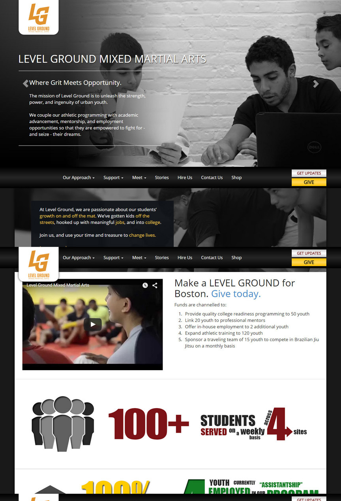
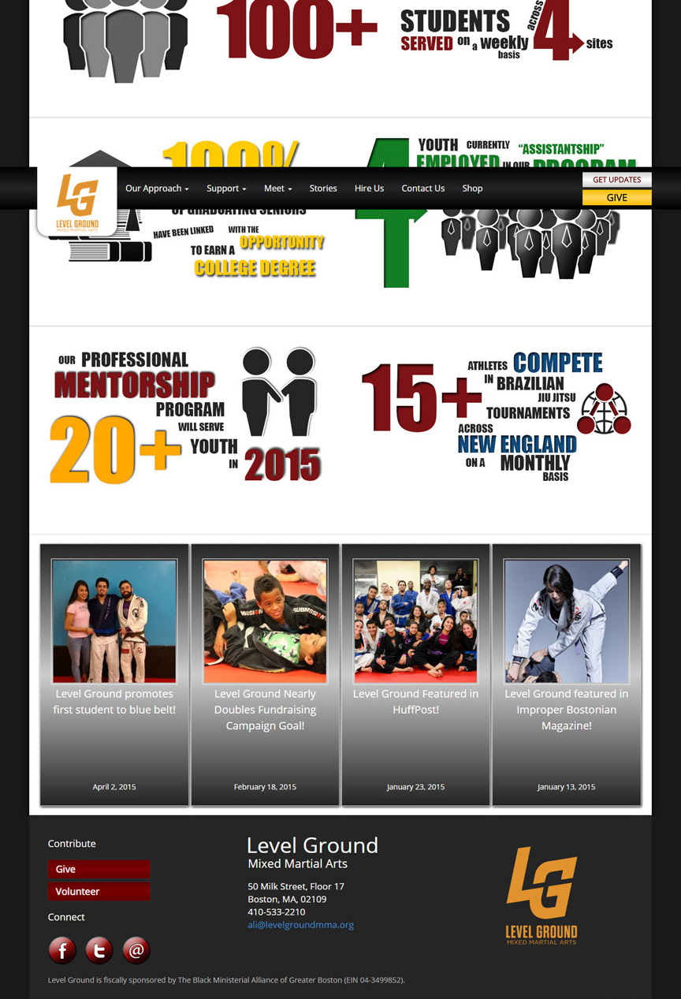
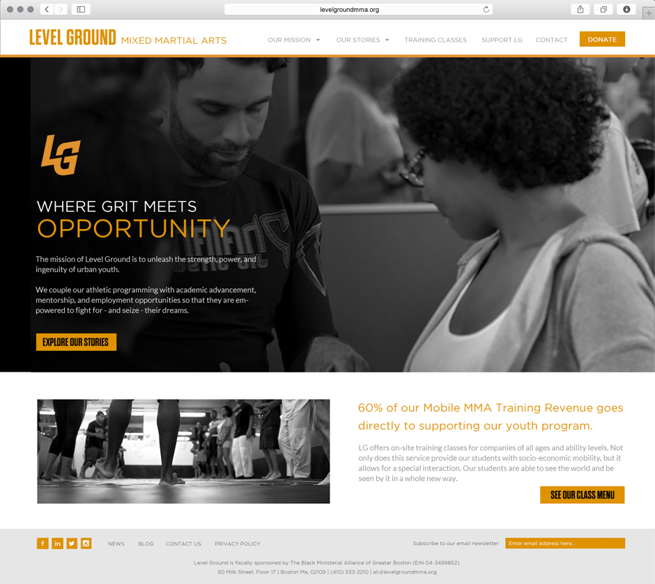

Level Ground MMA: Case Study
Level Ground MMA is a non-profit focused on leveraging the teachings of Brazilian Jiu Jitsu to bring discipline and community mentorship to Boston urban youth. The students of Level Ground learn the art of Brazilian Jiu Jitsu while being mentored off the mat to gain meaningful jobs, trade experience, and college education.
Hosted at the Startup Institute, the IdeaHack hackathon focused on creating proposals for scaling the market strategy of Level Ground MMA, especially for classes taught by licensed Jiu Jitsu instructors for corporate customers.
The Challenge
Redesign the Level Ground MMA website to bring attention to the main call-to-actions of the organization: donating to the non-profit, learning more about the organization and its mission, and learning more about the corporate classes.
The Process
The current website lacks focus on bringing forth the main call-to-actions of the organization and telling the story of its mission in an engaging manner.
To gather design insights on the website, various research techniques were employed -- namely, competitive analysis on the similarly aligned non-profit Innercity Weightlifting and stakeholder interviews of the Level Ground MMA organization.
Research Insights
- Front Page Length: The front page of the website is very long, and users must continually scroll to learn more about the mission of Level Ground.
- Understanding the Mission: The front page of the website doesn't do a great job of engaging the audience.
- Call-to-Actions: The call-to-actions are scattered throughout the page and blend in with the other functions of the page.
- Navigation Bar: The navigation bar lacks contrast from the rest of the page, and appears in multiple places due to the scrolling.
- Graphics: The graphics showcasing the different accomplishments of the program look dated and take up a significant portion of the page.
- Lack of Corporate Classes: The corporate classes are only featured as a navigation bar item on the front page as "Hire Us". It is unclear what "Hire Us" refers to without prior knowledge of their corporate class offerings.

Top Half of Level Ground Website

Bottom Half of Level Ground Website
The Execution
The finalized redesign was mocked up in Photoshop. The overall color scheme was brightened up to provide contrast between different portions of the page.
Design Rationale
- Front Page Length: The front page of the website is considerably shortened, and call-to-actions are added to encourage the user to click through to other parts of the website.
- Possible Video Splash: Website could feature a video to explain the mission of the organization, and include interviews with a student, a mentor, and a teacher to describe the different facets of the program from peoples' personal experiences.
- Call-to-Actions: The call-to-actions stand out with the use of yellow boxes to provide contrast from the rest of the page.
- Navigation Bar: The added contrasting navigation bar lies on top of the main graphic. Navigation menu items are changed to clarify pages of the site.
- Updated Graphics: Graphics were changed to focus on pictures of the students in their Jiu Jitsu classes.
- Corporate Classes: Information about the corporate classes is added underneath the main graphic.

After proposing this redesign and market strategy to a panel including Level Ground board members, our team of five won the 24-hour hackathon hosted by the Startup Institute out of the nine teams competing.